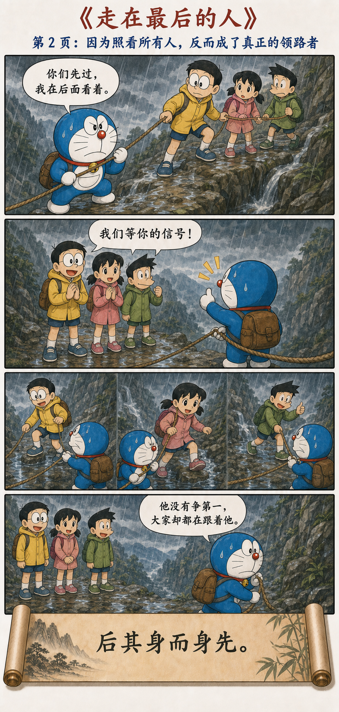
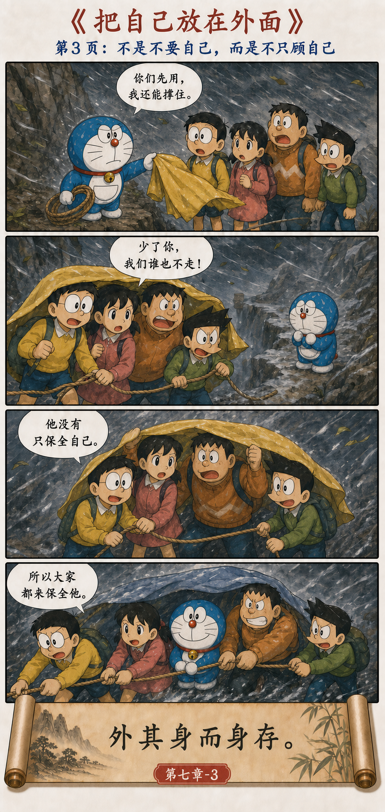
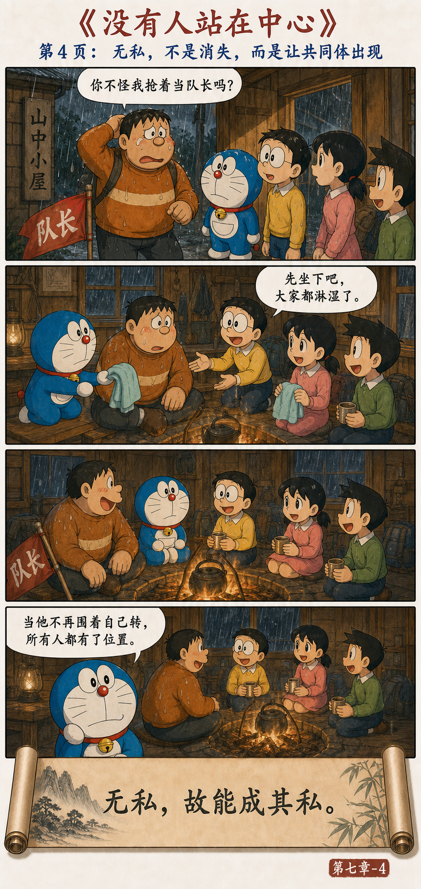

Heaven and earth endure because they do not live for themselves alone. Thus the sage places himself behind yet comes to the fore, puts himself outside yet remains. Is it not because he is without selfishness that his own good is fulfilled?
第一图 · 一定要走在最前面吗？What the comic shows: On a dangerous mountain trail, everyone assumes that leadership means taking the front position. Doraemon notices that this race to be first leaves nobody watching the whole group. The story begins by separating visible rank from actual responsibility.

第二图 · 因为照看所有人，反而成了领路者。What the comic shows: Doraemon stays at the rear, secures the rope, and helps each friend cross before him. Although he does not claim first place, everyone begins to follow his signals. This turns “placing oneself behind” into practical leadership.

第三图 · 把自己放在外面，才看得见整体。What the comic shows: Doraemon gives the shelter to his friends and remains exposed to the storm. They refuse to save only themselves and return to protect him. His care for the group awakens the same care in them—an image of “putting oneself outside, yet remaining.”

第四图 · 没有人抢中心，所有人都更安全。What the comic shows: The friends stop competing for the leading position and organize themselves around the shared task. Because no one treats personal prominence as the goal, the whole group reaches safety. Laozi’s “selflessness” appears here as a structure of mutual protection, not self-erasure.